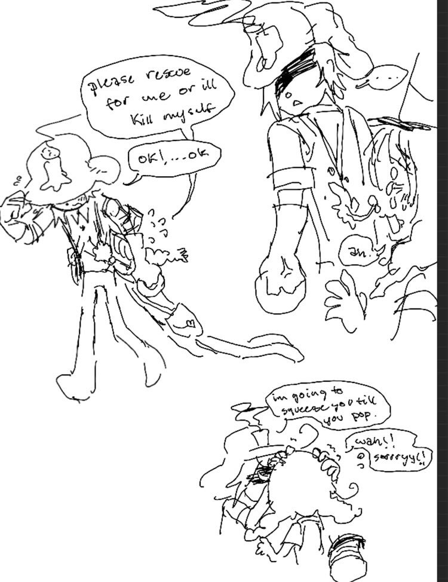
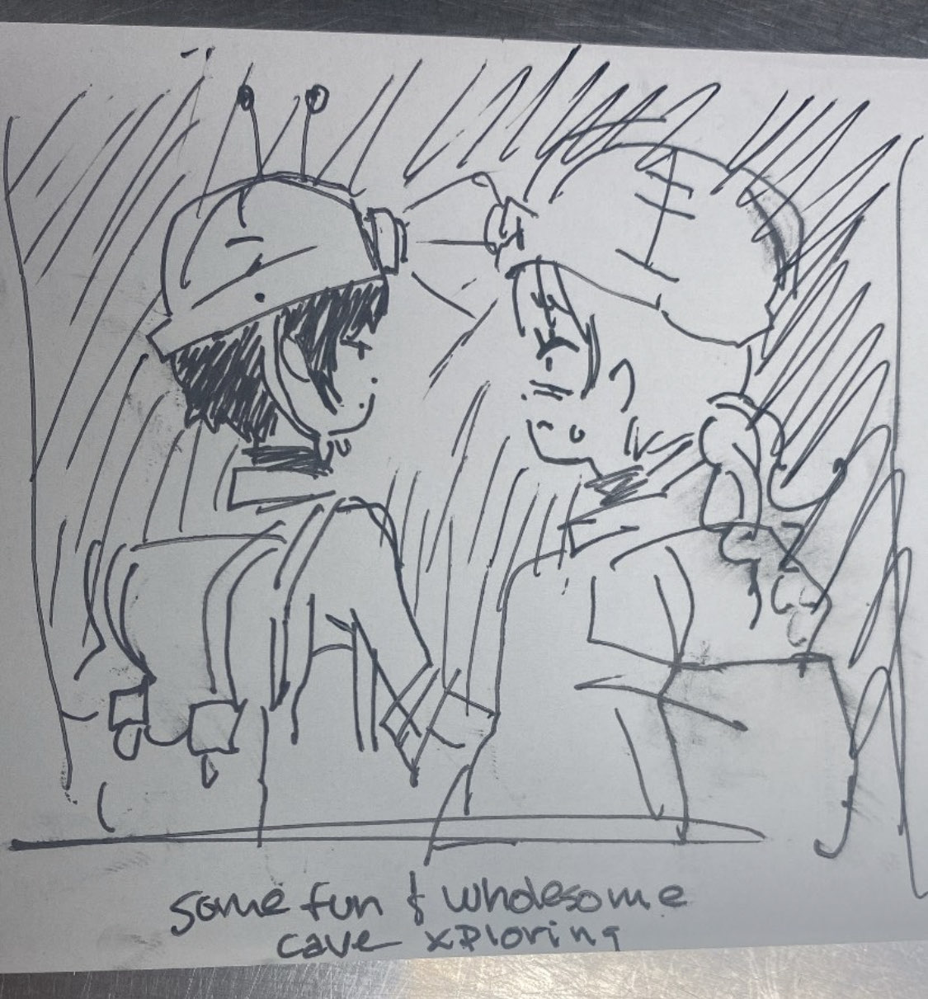
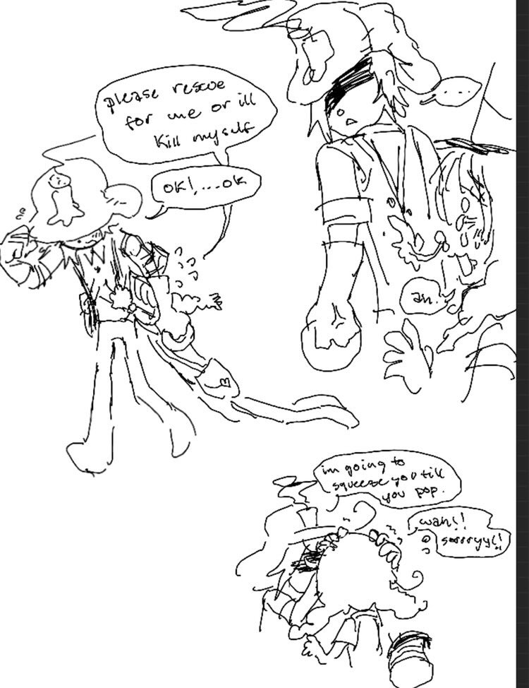
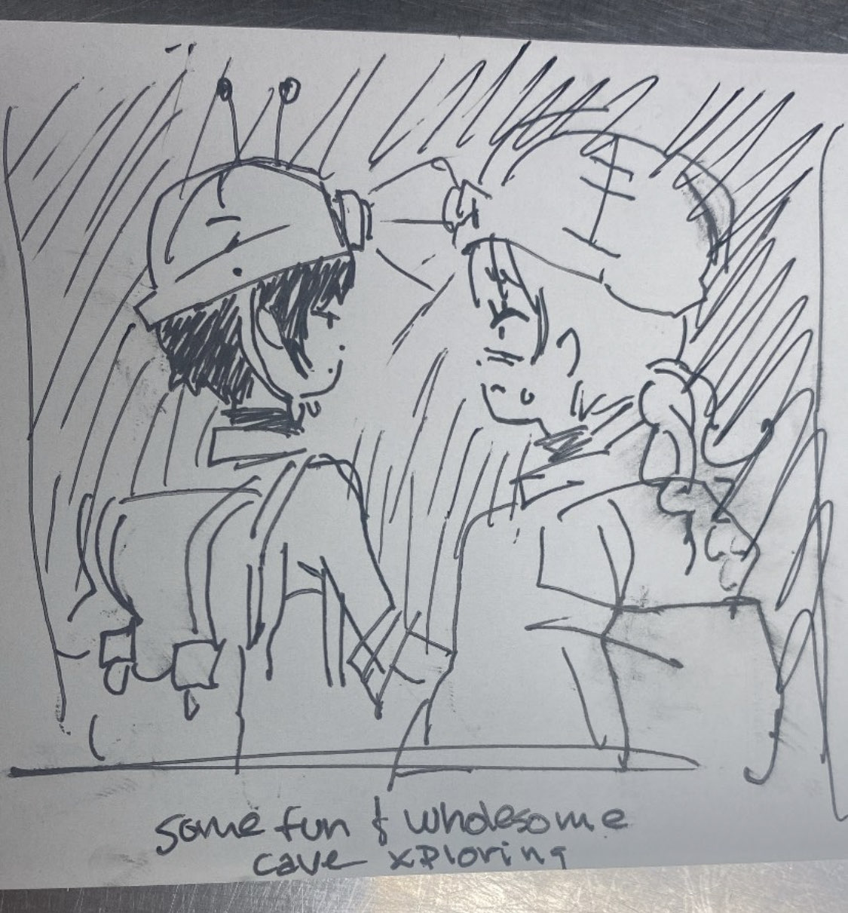
I've known you since 2023.09.04, isn't that crazy? We shared a lot of good memories over these couple years, and it doesn't feel like I quite know you that well. That's why I want to know you better, and I hope we can create more memories when we're ready to.
I've taken for granted the short memories you've given me, the love you've shown me that goes beyond platonic and romantic binary, and I'm dejected that I couldn't properly see the beauty of someone as resolute as you showing how worthy of being myself I was. As persistent as you were, you are human and you can only endure for so long. I should have supported you even harder in times you needed it, but my insecurity caused me to stress others who didn't deserve it, you the most. I lost friends that I wish I kept. That's why I am grateful now, because even before those labels I've conditioned myself into clinging onto, your love was a choice that proved I needed faith in my own judgement, something I struggled with for a long time. I'm ready to lose my antipathy to a world undeserving of it.
Since you've been in a depressive episode, I want to do more to uplift you. I know I give everyone a hard time and I'm difficult to read, so what better way to exhibit my support for you but using my most passionate mode of communication: web design!
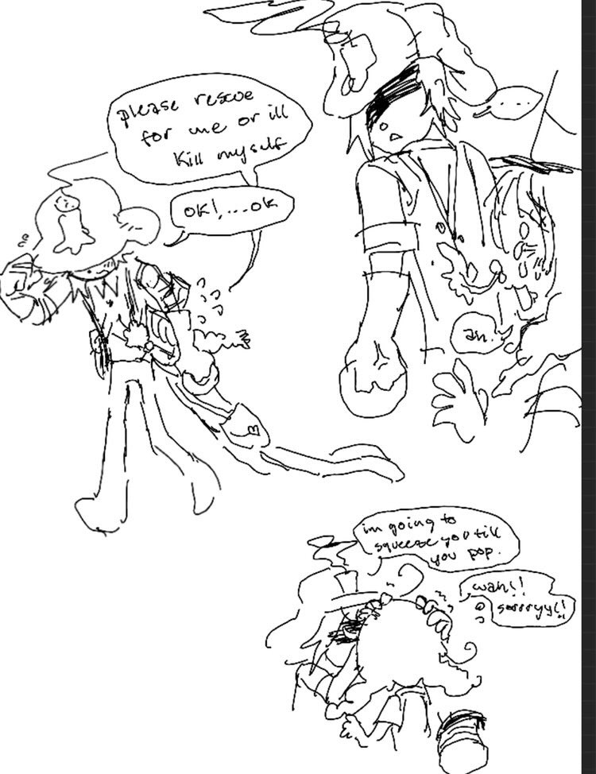
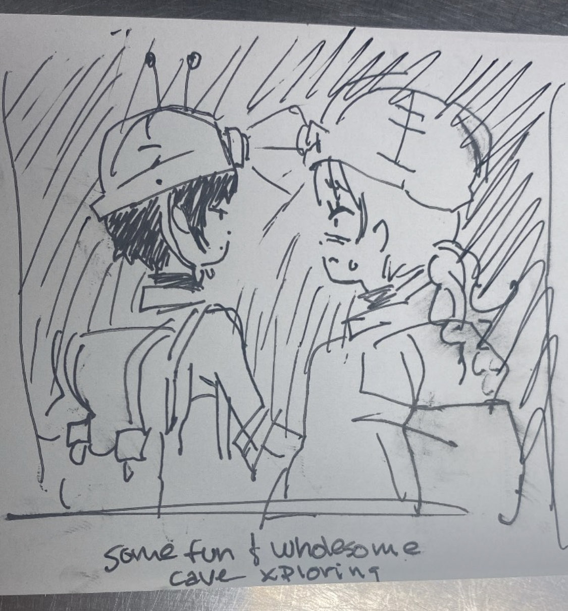
The first time we met, I asked you "Are we friends?" and we caught ourselves talking to each other all night, and the nights after that. My heart doubled up when I caught onto the rawest nature of our connection after the night we first watched that movie together, and I wonder if you remember what happened afterwards fondly, cringe, or feel wretched that you've given me the reins to something so vast and I was too immature to handle it. Do you remember when you were worried you were distracting me from work and I told you "I like when you distract me?" It still holds true.
You helped me have the best life I could possibly have in my condition; platonically, romantically, financially, and most importantly just by providing perspectives that I haven't even thought of or wasn't ready to hear. You can laugh at Toram Online's farmtrap environment, I was just mad you were right LOL
You showed me a lot of new music I haven't experienced. You played and watched many types of media that I was passionate about, because you were passionate about me. You were able to get me into the December convention for a full weekend. You made me feel comfortable in my gender and sexuality. You supported my irresponsible career decisions and most importantly, supported my art FRAME 1. You've given me a lot of first times. Even when I mistreated many people including you, you made a choice to stick by me despite things that would otherwise be a dealbreaker with anyone else because your decisions are layered and emotionally intelligent, something the rest of the world is short on.
Lately, I've been wondering "What danmei artwork is Jada creating these days? We haven't finished those TV shows that she likes yet" and I worry that because I'm so unfamiliar with that world, I'll never get to participate in your passions like you have with mine. With this, you've taught me to be more forward and openly passionate.
Even though we butted heads several times, I respect your faith in me despite my contrarian idiosyncracies. Because of your persistence, I'm dropping some habits and addictions to treat everyone better. I'm working to be self-sustaining, but I have been missing you. Hopefully our future still holds both of us in contact so I can prove you made the right choice being on my side.
The next time you feel useless, or like you have no control, come back and read my message again. You are always welcome in my life in any form or stage that Jada decides to welcome herself as, at any time.

 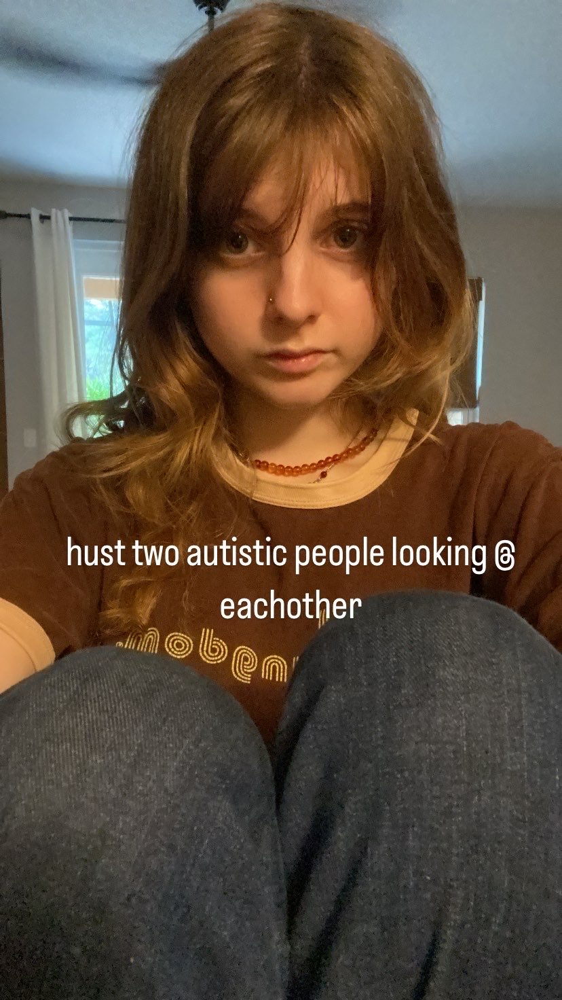
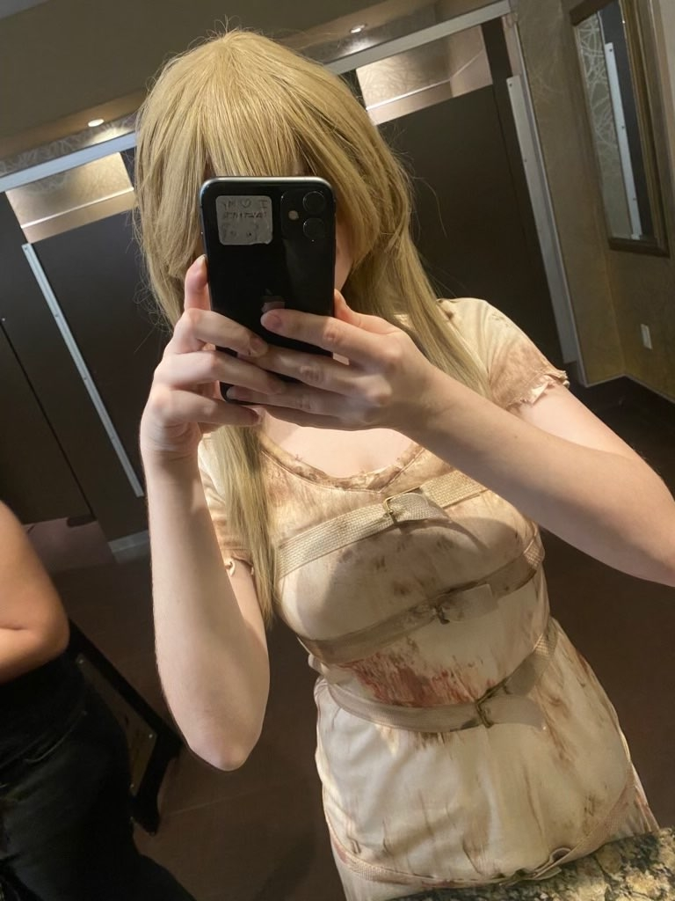
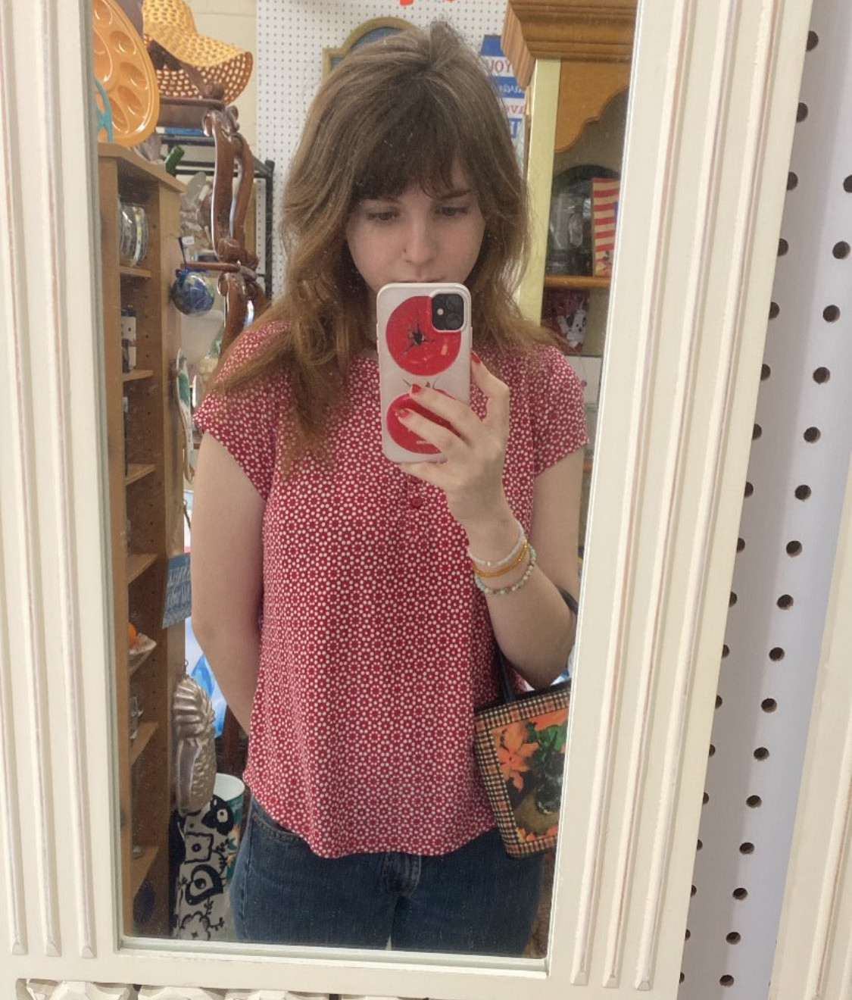
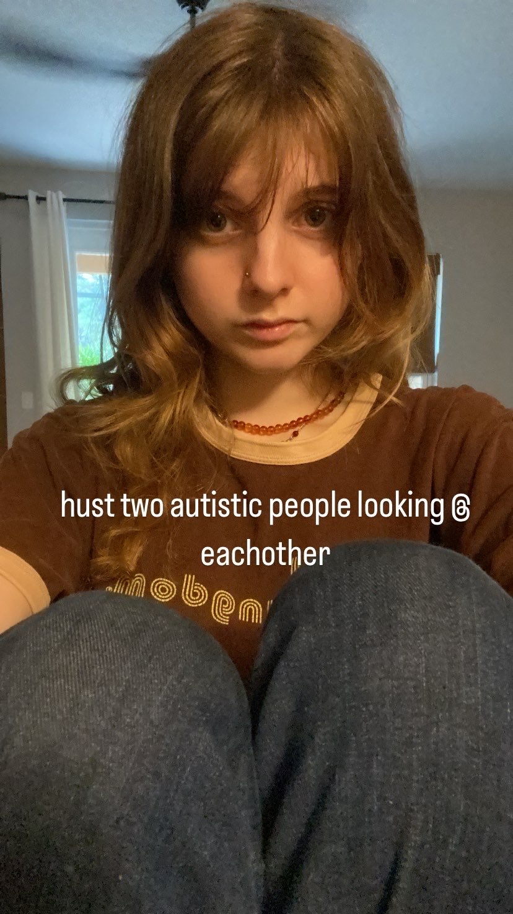
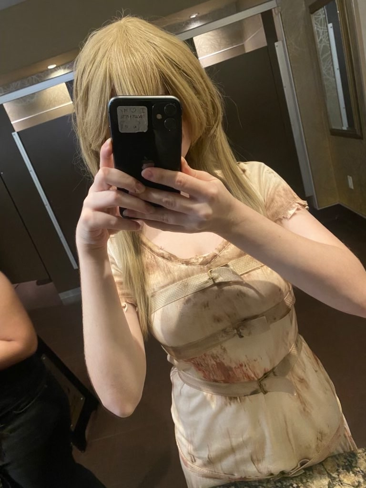
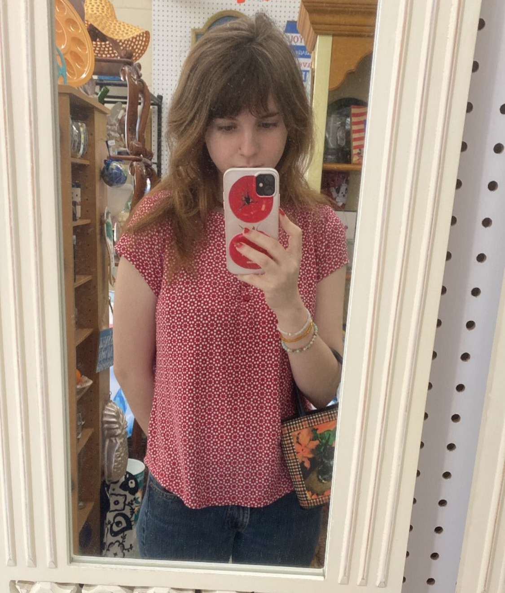